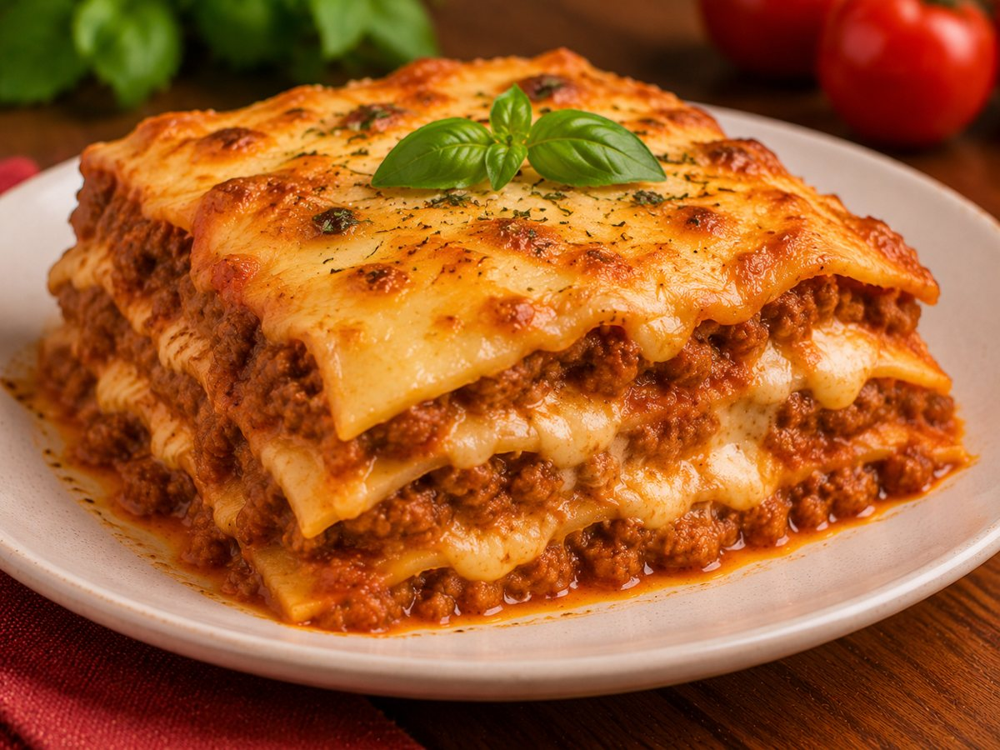

Lasanha
Camadas de massa, molho de carne, presunto e queijo, gratinadas no forno.
- Preparo
- 1 h 15 min
- Rende
- 6 porções
- Dificuldade
- Médio

Ingredientes
Molho
- 500 g de carne moída
- 1 cebola picada
- 2 dentes de alho amassados
- 1 lata de molho de tomate
- 1 xícara (chá) de água
- 1 colher (sopa) de óleo
- Sal a gosto
Molho branco
- 3 colheres (sopa) de manteiga
- 3 colheres (sopa) de farinha de trigo
- 3 xícaras (chá) de leite
- Sal e noz-moscada a gosto
Montagem
- 1 pacote (500 g) de massa de lasanha
- 300 g de presunto fatiado
- 400 g de mussarela fatiada
- Queijo ralado para gratinar
Modo de preparo
- Prepare o molho: refogue a cebola e o alho no óleo, junte a carne moída e frite até secar. Acrescente o molho de tomate, a água e o sal e cozinhe por 15 minutos.
- Faça o molho branco: derreta a manteiga, junte a farinha e mexa por 1 minuto. Adicione o leite aos poucos, mexendo sempre, até engrossar. Tempere com sal e noz-moscada.
- Cozinhe a massa conforme a embalagem, se não for pré-cozida, e escorra.
- Em um refratário, espalhe uma camada de molho de carne e cubra com massa.
- Coloque presunto, mussarela e um pouco de molho branco. Repita as camadas até acabar os ingredientes, terminando com molho e queijo.
- Polvilhe queijo ralado e cubra com papel-alumínio.
- Leve ao forno preaquecido a 200 °C por 25 minutos. Retire o papel e deixe mais 15 minutos para gratinar.
- Aguarde 10 minutos antes de cortar, para que as camadas firmem.
Dicas
- Deixe a lasanha descansar antes de servir: ela fica mais firme e fácil de porcionar.
- Dá para montar com antecedência e assar apenas na hora de servir.